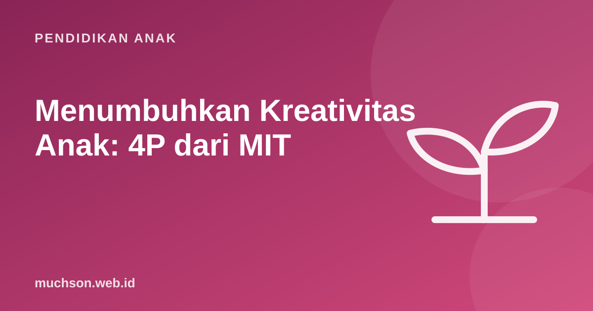

Beranda › Artikel › Pendidikan Anak
Pendidikan AnakMenumbuhkan Kreativitas Anak: 4P dari MIT
Kreativitas sering dianggap bakat bawaan: ada anak yang kreatif, ada yang tidak. Mitchel Resnick, profesor di MIT Media Lab dan pemimpin tim yang menciptakan Scratch, berpendapat lain. Menurutnya, kreativitas bisa ditumbuhkan, dan ia merangkum caranya dalam empat P: projects, passion, peers, dan play.

Belajar seperti di TK, sepanjang hidup
Dalam bukunya Lifelong Kindergarten (2017), Resnick memperhatikan bahwa anak TK belajar dengan cara yang sangat kreatif: membayangkan sesuatu, membuatnya dengan balok atau krayon, memainkannya, membagikannya ke teman, lalu merenungkan dan mendapat ide baru. Ia menyebutnya spiral belajar kreatif. Sayangnya, semakin tinggi jenjang sekolah, semakin sedikit ruang untuk spiral ini.
Empat P untuk menumbuhkan kreativitas
1. Projects: membuat sesuatu yang nyata
Anak belajar paling dalam ketika mengerjakan proyek yang bermakna: membangun rumah kardus, membuat komik, merancang game. Proyek memberi alasan untuk belajar keterampilan baru. Anak yang ingin membuat game punya alasan kuat untuk memahami koordinat.
2. Passion: berangkat dari minat
Anak bekerja lebih lama dan lebih tekun pada hal yang ia pedulikan. Proyek tentang kucing peliharaannya, tim sepak bola favoritnya, atau dinosaurus akan jauh lebih menarik daripada tugas yang ditentukan sepenuhnya oleh orang dewasa.
3. Peers: berkarya bersama teman
Kreativitas tumbuh dalam interaksi: berbagi ide, memberi masukan, saling meniru lalu mengembangkan. Komunitas Scratch dibangun dengan prinsip ini, termasuk budaya remix yang menghargai pembuat asli.
4. Play: bermain dan bereksperimen
Bermain di sini berarti sikap: berani mencoba, bereksperimen, mengambil risiko, dan menguji batas. Bukan sekadar bersenang-senang, tetapi kesediaan untuk "coba saja, lihat apa yang terjadi".
Ubah kegiatan biasa menjadi kreatif
| Kegiatan biasa | Versi kreatif |
|---|---|
| Mewarnai gambar yang sudah jadi | Menggambar tokoh sendiri lalu membuat ceritanya |
| Mengikuti tutorial langkah demi langkah | Ikuti tutorial, lalu ubah tiga hal menjadi versimu |
| Membaca buku | Membaca, lalu menulis akhir cerita yang berbeda |
| Menyusun lego sesuai instruksi | Setelah jadi, bongkar dan buat sesuatu yang belum ada di kotaknya |
| Main game | Merancang level atau aturan baru untuk game itu |
Pertanyaan "bagaimana kalau ...?" adalah mesin kreativitas. "Bagaimana kalau kucingnya bisa terbang?", "Bagaimana kalau gamenya dimainkan terbalik?" Ajukan pertanyaan seperti ini sesering mungkin.
Kebiasaan yang diam-diam mematikan kreativitas
Proyek kreatif akhir pekan
Scratch lahir dari kerangka 4P ini, dan coding dengan Scratch adalah salah satu cara paling lengkap untuk menjalankan spiral belajar kreatif: membayangkan, membuat, memainkan, membagikan, dan merenungkan. PixelKode membawa prinsip yang sama ke kelas berbahasa Indonesia, dengan proyek di setiap pelajaran dan galeri untuk berbagi karya dengan teman sekelas.
Tanya jawab
Apakah kreativitas bisa dilatih?
Apa itu 4P kreativitas?
Apa itu spiral belajar kreatif?
Apa kegiatan kreatif untuk anak di rumah?
Sumber dan bacaan lanjut
- Resnick, M. (2017). Lifelong Kindergarten: Cultivating Creativity through Projects, Passion, Peers, and Play. MIT Press
- Lifelong Kindergarten Group, MIT Media Lab
- Scratch untuk pendidik
- Yogman, M. dkk. (2018). The Power of Play. Pediatrics